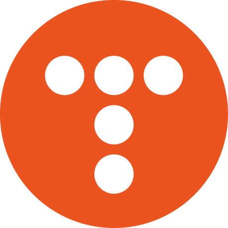

간단한 SNS 웹 사이트를 제작했습니다. Spring Security와 JWT을 이용한 로그인 기능
포스트(게시물)을 관리하는 게시판 기능 kafka를 이용한 비동기처리, Redis Cache를 이용해 DB조회 최적화를 공부해볼 수 있었습니다.
Tistory Custom Skin
2023.12.12 ~ 2023.12.00
Java Script, HTML, CSS

(현재 진행중)
현재 제 티스토리 블로그는 이것을 통해 제작되었습니다.
티스토리 스킨 중 hELLO 스킨을 편집해서 제작했습니다. JavaScript와 CSS를 이용해서 모달 검색창과 hover시 전환효과를 가진 사이드바를 구현했습니다.
Team Project .
Mumo
2023.11.01 ~ 2023.12.05
Java
Spring Boot, Spring Security
Thymeleaf, JPA
MySQL
AWS EC2, RDS, FastAPI, Docker
Github, Slack
사용자에게 뮤지컬을 추천해주는 웹사이트 제작 프로젝트입니다.
5인으로 구성된 팀에서 PM 역할을 수행했습니다. Github Organization을 만들어 프로젝트를 진행했습니다.
협업을 위한 병합/브랜치 전략을 공부해서 적용했습니다.[post] Spring Boot + Thymeleaf로 웹사이트 제작 및 각 서버 배포를 담당했습니다. Spring Security를 통한 로그인 기능, JPA를 이용한 DB조작 기능을 구현했습니다. [post]
각 서버는 AWS EC2에 DockerFile을 이용해 배포했으며, Web Server와 API Server간의 통신을 구현했습니다.
Visualization
2023.06.27 ~ 2023.06.29
Python
Streamlit
Streamlit을 이용해 데이터를 시각화하는 프로젝트입니다.
경기도데이터드림에서 csv파일을 가져왔고, Folium, Plotly, Matplotlib 라이브러리들을 이용해 시각화 했습니다.
짧은 기간의 프로젝트이기에 페이지 단위로 업무를 분담해서 진행했습니다.
Streamlit을 사용해 웹페이지를 구현했고, 결측치 데이터들에 대한 전처리 연습을 할 수 있었습니다.
해당 내용은 Github README.md에 정리했습니다.
Education
Data engineering 26
2023.6.07 ~ 2023.12.05
en·core PLAY DATA
빅데이터 기반 지능형 SW 및 MLOps 개발자 양성과정
다음과 같은 교육과정을 수료했습니다.
Python으로 데이터 분석 및 시각화, 머신러닝, 딥러닝 기초
Java, Spring Boot, JavaScript를 이용한 Web app 개발
Linux, Docker를 이용한 가상환경에서의 개발과 테스트
명지대학교
2013.03.04 ~ 2022.2.16
컴퓨터공학 학사
명지대학교 컴퓨터공학과
공학교육인증(ABEEK) 과정을 수료하고
공학사(컴퓨터공학심화) 학위를 취득했습니다.
ETC
Study .
Project,
Coding Test
2023.10.21 ~
프로젝트 코드리뷰
코테 문제풀이
미니 프로젝트 진행
엔코아 플레이데이터 엔지니어링 트랙을 함께했던 동료들 중에
마음 맞는 인원들이 모여 주 1회 스터디를 진행하고 있습니다.
소규모 프로젝트 진행상황 공유 및 코딩테스트 관련 문제풀이 코드리뷰를 합니다.
Work .
도서관 사서
2019.07.04 ~ 2023.01.01
희망샘도서관
희망샘도서관 사서
2019.07.04 ~ 2022.03.01 일용 근로자로
2022.03.02 ~ 2023.01.01 상용 근로자로 근무했습니다.
KOLAS를 이용한 전반적인 도서관 업무경험
많은 이용자들을 안내하는 경험,
근로장학생, 자원봉사학생들을 교육하는 업무를 경험했습니다.